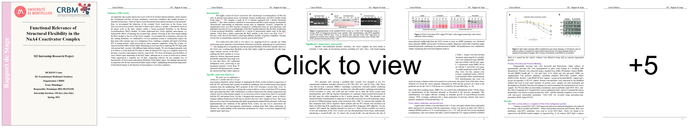
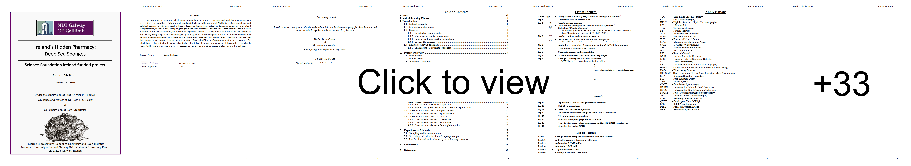

Interests
AI is opening up a new frontier in medicine, where advanced algorithms that can identify subtle patterns and relationships that would be impossible for humans to detect manually, will help us unravel the complexities of human biology and develop more effective treatments for a wide range of diseases.
My aim as a researcher is to use recent advances in molecular biology, next-generation sequencing, and the growing power of AI to unlock previously inaccessible insights into human biology. I am committed to improving my understanding not only of the science, but also of the industry and regulatory landscapes that govern the translation of this research into new medicines.
Reports
Functional Relevance of Structural Flexibility in NuA4 Coactivator Complex (2022)

An Epigenetic Mechanism for Mutation Rate Modulation in the Fungal Wheat Pathogen Zymoseptoria Tritici (2022)
Ireland's Hidden Pharmacy - Deep Sea Sponges (2019)

Presentations
Functional Relevance of Structural Flexibility in NuA4 Coactivator Complex (2022)

An Epigenetic Mechanism for Mutation Rate Modulation in the Fungal Wheat Pathogen Zymoseptoria Tritici (2022)

Bacterial Leukotoxins - Insights from Mass Spectrometry (2021)